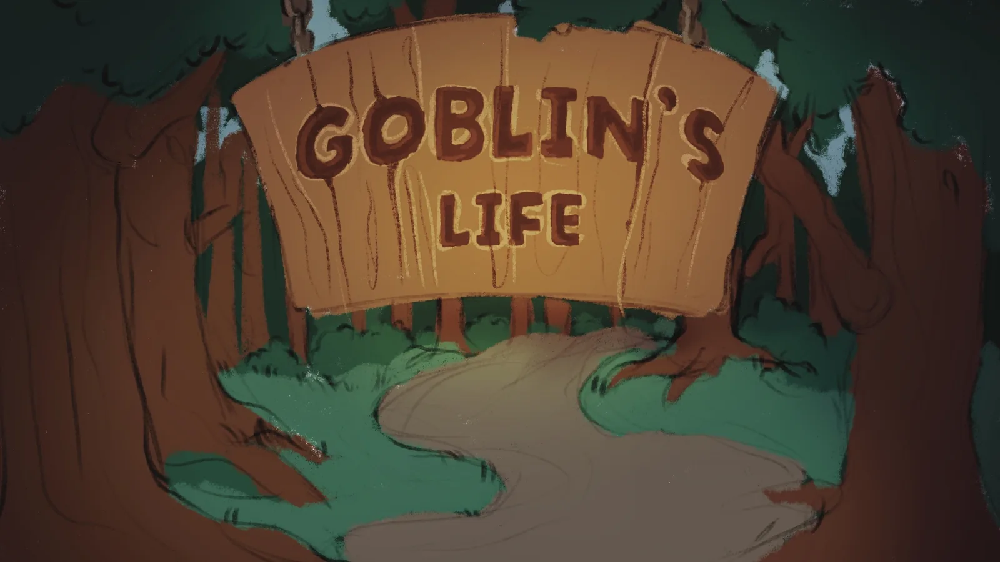
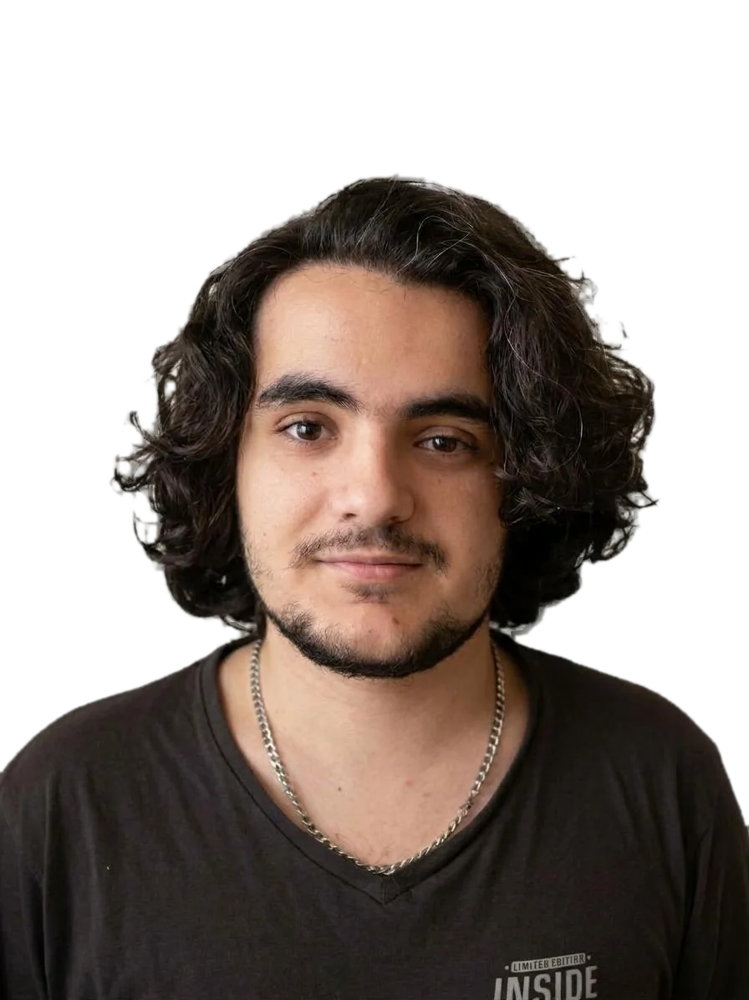
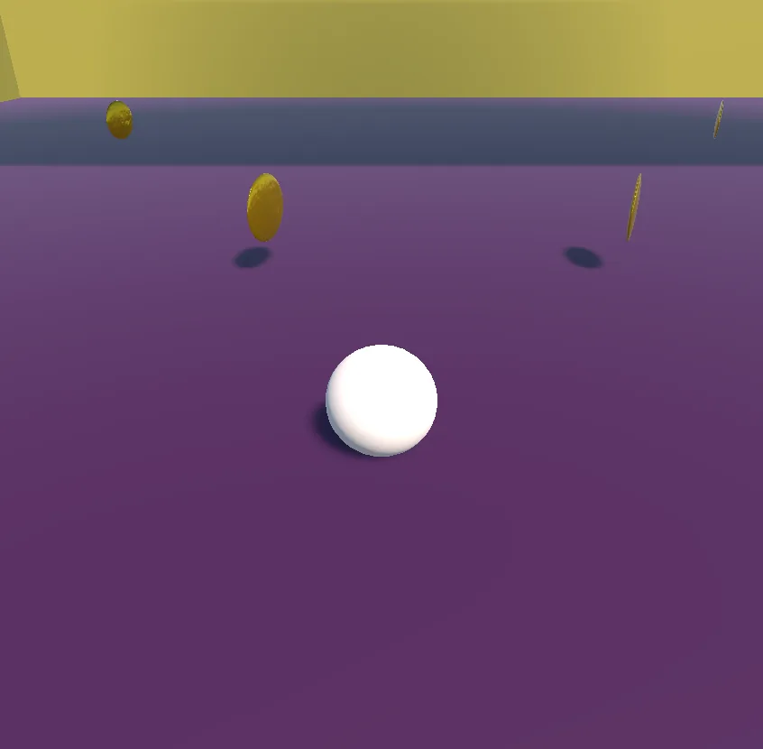
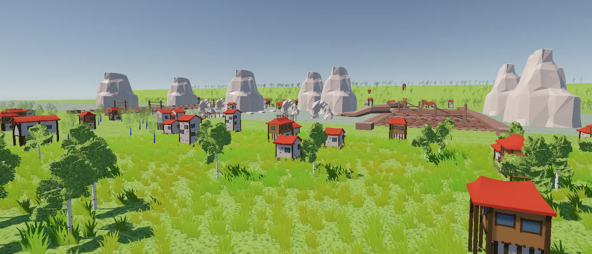

PROYECTO PRINCIPALUN GOBLIN, UN CAMPAMENTO, UNA AVENTURA↗Goblin's Life
Demo low-poly de aventura y combate · Unity
PORTFOLIO / 2026
Los videojuegos me acompañan desde pequeño. Ahora estoy aprendiendo a convertir esa pasión en mundos, mecánicas y experiencias propias con Unity.

MENTE CREATIVA · SIEMPRE APRENDIENDO001 — 026PROYECTOS DESTACADOS
Un primer vistazo a mi camino en el desarrollo de videojuegos: desde ejercicios de aprendizaje hasta mi propia demo.

PROYECTO PRINCIPALUN GOBLIN, UN CAMPAMENTO, UNA AVENTURA↗Demo low-poly de aventura y combate · Unity

UNITY / EJERCICIO 01ROLL A BALL↗Ejercicio de aprendizaje en Unity

UNITY / EJERCICIO 02PROYECTO MAPA↗Ejercicio de entornos en Unity
HERRAMIENTAS
Las herramientas con las que estoy aprendiendo y creando mis proyectos.
Entre Bélgica y España. Abierto a oportunidades y colaboraciones en ambos lugares.
UN POCO SOBRE MÍ
Desde pequeño, los videojuegos han estado presentes en mi vida. Lo que empezó como un pasatiempo se ha convertido con el tiempo en una meta: aprender a construir mundos y experiencias propias.
Hace poco terminé mi formación en desarrollo de videojuegos con Unity 3D, uno de mis primeros estudios sobre programación, que me ha ayudado a dar mis primeros pasos en este campo.
Soy una persona activa, responsable y con facilidad para adaptarme. Me gustan los retos, aprender cosas distintas y salir de mi zona de confort para seguir mejorando.
Mi formación no se limita a la programación: terminé el Bachillerato científico-sanitario y el Grado Superior de Enseñanza y Animación Sociodeportiva (EAS), lo que refleja mi curiosidad y mis ganas de explorar distintos campos.
Me encanta probar cosas nuevas, descubrir habilidades y afrontar cada proyecto con entusiasmo y dedicación.
Siempre estoy abierto a nuevas oportunidades, proyectos y colaboraciones.
Si tienes una idea en mente, me encantaría conocerla. No dudes en ponerte en contacto conmigo.
¿TIENES ALGO EN MENTE?
¿Tienes un proyecto, una oportunidad o una idea que quieras compartir? Cuéntame un poco de qué se trata.